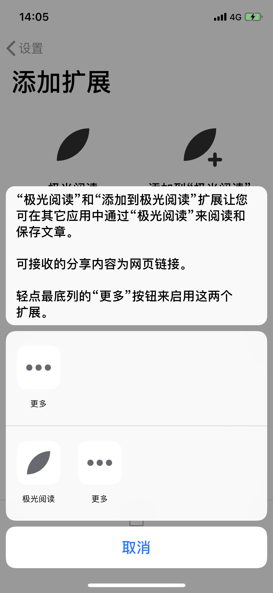
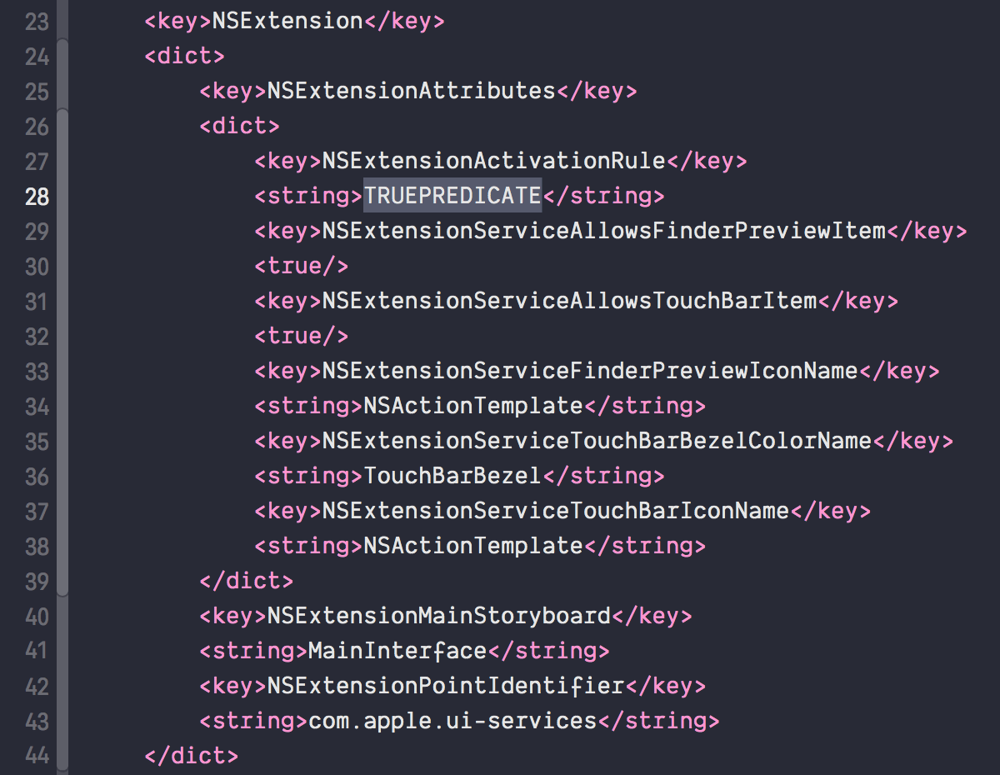
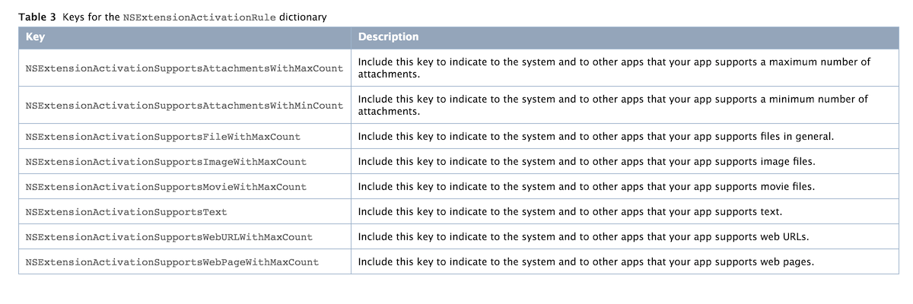
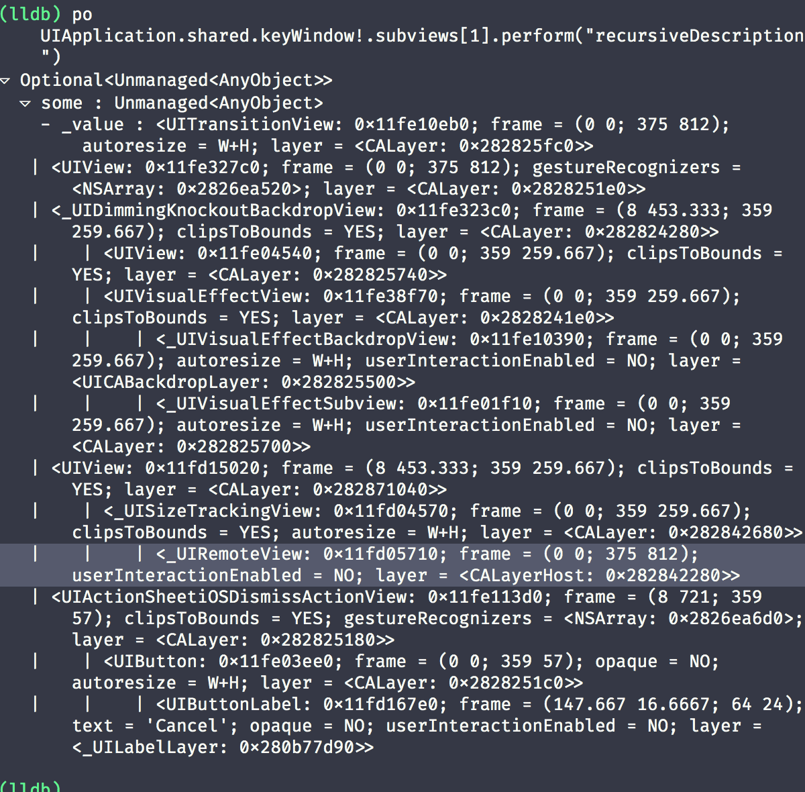
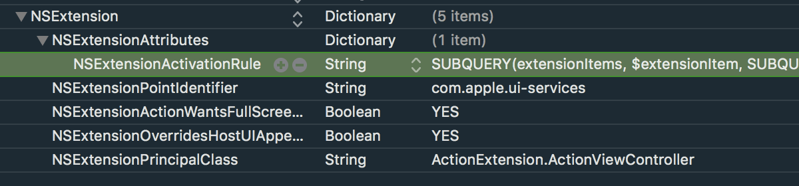
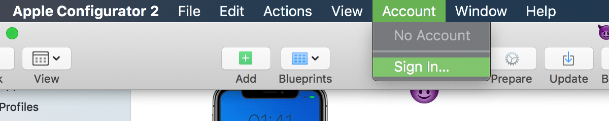
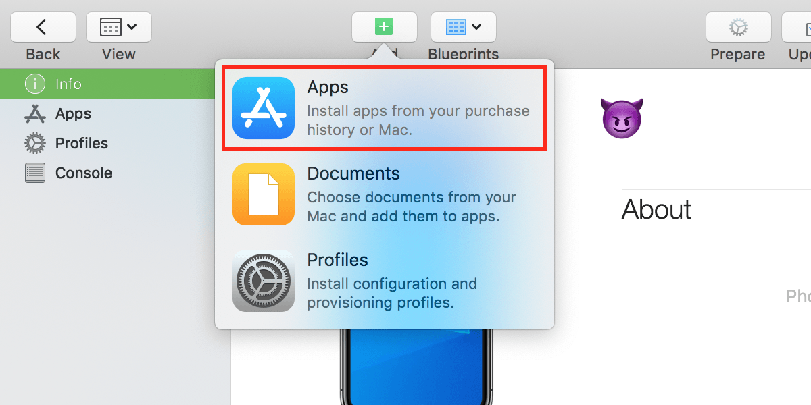
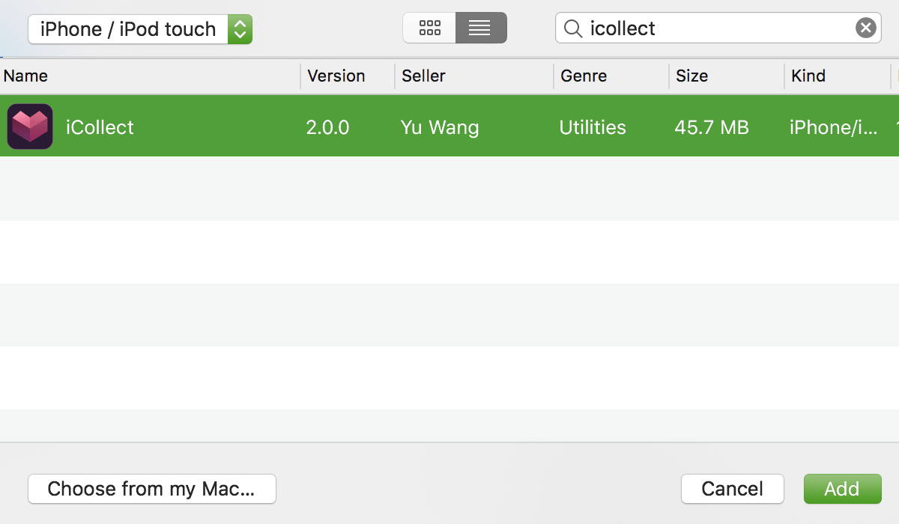
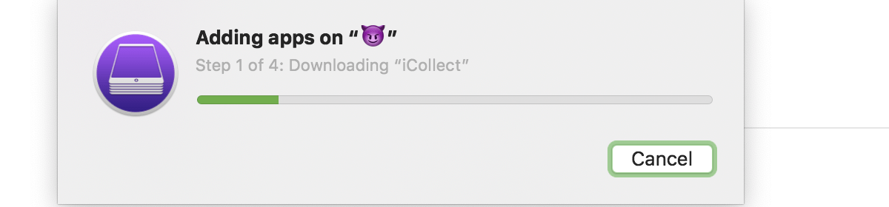
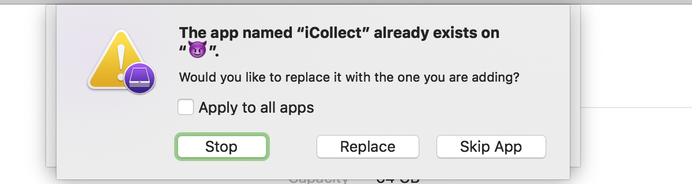

引导用户添加拓展
如果 App 中包含拓展，如何更好的引导用户去启用这些拓展？目前我所见的做的最好的可能是 Junyu Kuang 的 极光阅读 了。
引导用户添加拓展时只显示应用相关的拓展。这是如何实现的呢？基于学习目的，我下载了极光阅读的 ipa 包（如何下载见文末），经过一番研究，下面我们来具体实现一下。
新建一个 Xcode 项目，并新建一个名为“MailMe”的 Action Extesion，看下 info.plist

NSExtensionActivationRule 字段默认值为 TRUEPREDICATE，表示分享任何内容，此拓展都会出现在 Action Sheet 里，可以根据需要添加些限制，修改 NSExtensionActivationRule 为 dictionary，里面可以包含的键见 Action Extension Keys:

在 UIActivityViewController 类里有个 excludedActivityTypes 的属性，可以隐藏掉不想要的 Activity，如隐藏 AirDrop 等，但只能隐藏系统公开的一些 Activity，并不能隐藏全部。通过 View Debugging 也不能看到都有哪些 Activities。

我们来看下极光阅读的拓展的 info.plist：

NSExtensionActivationRule 的值为：
1 | SUBQUERY( |
[吃惊的表情][黑人问号]，还能这么写？！还真可以这么写，NSExtensionActivationRule 里是可以写谓词 (Predicate) 的，其语法见 Predicate Programming Guide，其中 UTI 为统一类型标识符 Uniform Type Identifiers，所有标识符见 Uniform Type Identifiers Reference。
那么，如果我们自定义一个标识符 com.kiligwyu.mailme.guide，当分享内容为此标识符的 item 时，Action Sheet 里就只显示我们的拓展了，因此把 NSExtensionActivationRule 的值改为:
1 | <!--- 假设 MailMe 拓展只处理分享的文字内容 --> |
另创建名为 MailMeActivityItem 的类，继承 NSObject，遵循 UIActivityItemSource 协议：
1 | // MailMeActivityItem.swift |
然后在引导用户添加拓展的地方：
1 | // ViewController.swift |
这样 Action Sheet 里就只显示我们的拓展到了。
PS：GitHub 上 VisualActivityViewController 这个项目可以预览分享的内容
PPS: 如何下载 ipa
❌ macOS Mojave 已经不支持安装旧版 iTunes
❌ 从 App Store 中下载应用，通过抓包获取其下载地址，下载后解压，如果 App 在打包时勾选了 “Include app symbols for your application to receive symbolicated crash logs from Apple.”，那么解压后会得到 Payload 和 Symbols 文件夹，而且里面全是 0K 的文件
✅ 通过 Apple Configurator 2
App Store 下载 Apple Configurator 2
在 Apple Configurator 2 中登录 Apple ID
连接 iPhone，需先在 iPhone 中安装要下载的应用
点击添加应用，从应用列表中选择需要获取 ipa 包的应用
 然后开始下载，下载完成后，因为手机上已经存在该应用，所以会有应用已存在的提示，不要做任何操作，继续下一步
 打开 Finder，前往
~/Library/Group Containers/K36BKF7T3D.group.com.apple.configurator/Library/Caches/Assets/TemporaryItems/MobileApps/，在该路径就可以看到 ipa 文件了拷贝出来，就得到了想要的 ipa